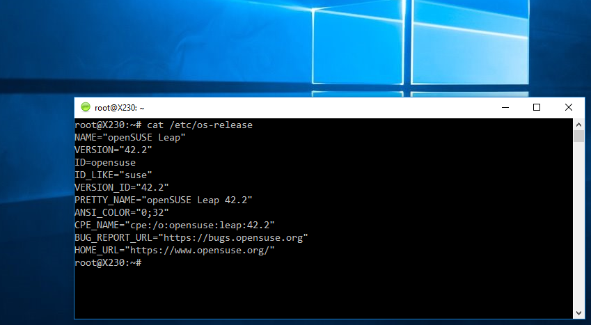

微软选择 Ubuntu 放到 Windows 10 的 Linux 子系统中，或许“错”了
虽然并非微软官方出品，不过你现在可以在 Windows 10 的 Linux 子系统（WSL）中使用 openSUSE Leap 或 SUSE Linux 企业版（SLES）了。
正如你所知道的，最新的 Windows 10 版本中含有一个完整的、基于 Ubuntu 的 Bash，开发者们可以在 Windows 桌面中直接运行 Linux 软件或命令。这被称为“Bash on Ubuntu on Windows”——一个啰嗦的名字——现在可以从 Windows 的开始菜单直接访问到了。
不过，SUSE 的资深产品经理 Hannes Kühnemund 却表示，以他自己的观点来看，微软在选择 Linux 发行版时选“错”了——明显应该选 openSUSE 嘛。
“在 Windows 上原生地运行 Linux 二进制程序……这听起来真棒！然而，十分不幸是，微软在 WSL 里面选用了一个错误的 Linux（当然，这是我个人的看法），而现在是我们让它回到轨道上的时候了。” Hannes Kühnemund 说到，“为啥选 SUSE？因为 SUSE 从 1992 年开始就在做 Linux 发行版了。想找一个资格更老的 Linux 厂商（也可以叫发行版），对不起，你找不到，根本就木有！”
好吧，不管怎么说，如果你也对此感兴趣的话，他还写了篇文章教给你如何在 Windows 10 的 WSL 中安装 SUSE。
在 Windows 10 中安装 openSUSE Leap 42.2
如果你是 SUSE 粉，而你又想在 Windows 10 中使用你喜爱的 SUSE，但是又厌倦了使用虚拟机或配置双引导，那么就跟着 Kühnemund 先生一起来吧，他会教给你如何在 WSL 中安装最新的 openSUSE Leap 42.2。
首先，你需要按照微软的说明启用 WSL，也可以参考我们之前的介绍。确保在安装过程中创建了一个普通用户（带口令）。
这些步骤也同样适用于 SUSE Linux 企业版（SLES） 12 SP2，不过你需要下载另外一个文件。
运行如下命令下载 openSUSE Leap 42.2 的 docker 用户空间：
wget -O openSUSE-42.2.tar.xz https://github.com/openSUSE/docker-containers-build/blob/openSUSE-42.2/docker/openSUSE-42.2.tar.xz?raw=true然后从开始菜单中打开 Linux bash shell，并执行如下命令来解压，然后退出 shell：
sudo mkdir rootfs
sudo tar -C rootfs -Jxf openSUSE-42.2.tar.xz
exit如果在运行这些命令时出现一些警告，可以忽略。
完成之后，备份当前的“Bash on Ubuntu on Window” 安装：
cd %localappdata%\lxss\
rename rootfs rootfs.ubuntu然后复制新的 openSUSE Leap 42.2 的根文件系统 rootfs：
move .\home\rootfs .\最后，设置 root 为默认用户：
lxrun /setdefaultuser root这样，下次你再访问 bash 时，你就用的是运行在 WSL 中的 openSUSE 或 SLES 啦。
当然，你还可以再做的完美些。用这个绿绿的 SUSE 图标替换 “Bash on Ubuntu on Window” 默认的橘红 Ubuntu 图标：
cd %localappdata%\lxss\
rename bash.ico Ubuntu.ico
rename Saki-NuoveXT-Apps-suse.ico bash.ico
在 Windows 10 中运行 SUSE Linux shell
哦，除了图标，启动菜单中的名字 “Bash on Ubuntu on Window” 显然你也想换过来，进到 %AppData%\Microsoft\Windows\Start Menu\Programs，把默认项改成“Bash on SUSE on Windows” 或其它你想要的什么名字。
其它发行版呢？
如果你喜欢其它 Linux 发行版，比如 Arch Linux，那么你可以看看这篇文章。
还能支持别的 Linux 发行版吗？你别说，还真有人做出了一个工具，可以在 WSL 中支持大多数的 Linux 发行版，并可以在这些发行版之间切换自如。
这个工具是由 RoliSoft 贡献到 GitHub 上的，名为 WSL-Distribution-Switcher 。其思路类似于上面 openSUSE 的思路，都是采用容器作为 WSL 中的根文件系统。
你可以通过该工具中的 get-prebuilt.py 或 get-source.py 从 Docker Hub 上下载各个发行版的官方镜像或 tar 包，然后用 install.py 安装即可。最后，你还可以通过 switch.py 在你下载安装的 WSL 中进行切换。具体的操作，请参考其说明。
由于它使用的是 Docker Hub 官方镜像，因此，它可以支持大多数 Linux 发行版，比如：
怎么样，你有试过在 Windows 10 中的 WSL 里面运行 Linux 吗？